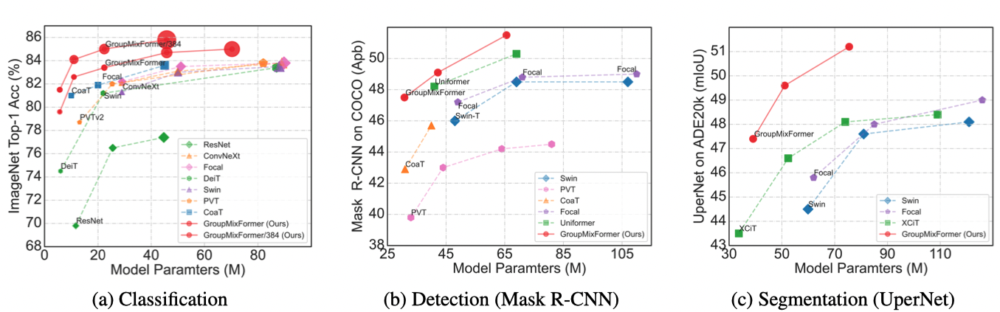

Advancing Vision Transformers with Group-Mix Attention

Abstract
Vision Transformers (ViTs) have been shown to enhance visual recognition through modeling long-range dependencies with multi-head self-attention (MHSA), which is typically formulated as Query-Key-Value computation. However, the attention map generated from the Query and Key captures only token-to-token correlations at one single granularity. In this paper, we argue that self-attention should have a more comprehensive mechanism to capture correlations among tokens and groups (i.e., multiple adjacent tokens) for higher representational capacity.
Thereby, we propose Group-Mix Attention (GMA) as an advanced replacement for traditional self-attention, which can simultaneously capture token-to-token, token-to-group, and group-to-group correlations with various group sizes. To this end, GMA splits the Query, Key, and Value into segments uniformly and performs different group aggregations to generate group proxies. The attention map is computed based on the mixtures of tokens and group proxies and used to re-combine the tokens and groups in Value.
Based on GMA, we introduce a powerful backbone, namely GroupMixFormer, which achieves state-of-the-art performance in image classification, object detection, and semantic segmentation with fewer parameters than existing models. For instance, GroupMixFormer-L (with 70.3M parameters and 3842 input) attains 86.2% Top-1 accuracy on ImageNet-1K without external data, while GroupMixFormer-B (with 45.8M parameters) attains 51.2% mIoU on ADE20K.
Citation
@article{ge2023advancing,
title = {Advancing Vision Transformers with Group-Mix Attention},
author = {Ge, Chongjian and Ding, Xiaohan and Tong, Zhan and Yuan, Li and Wang, Jiangliu and Song, Yibing and Luo, Ping},
journal = {arXiv preprint arXiv:2311.15157},
year = {2023}
}